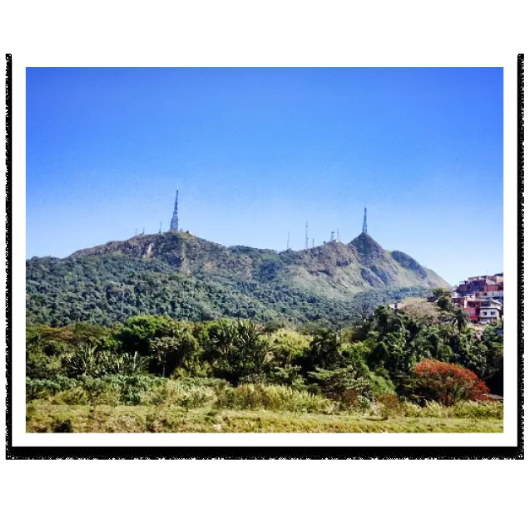
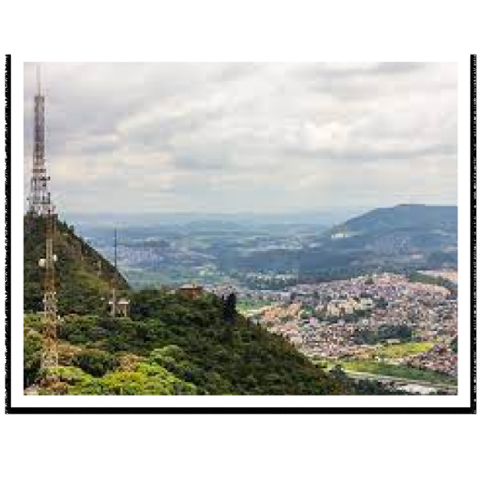
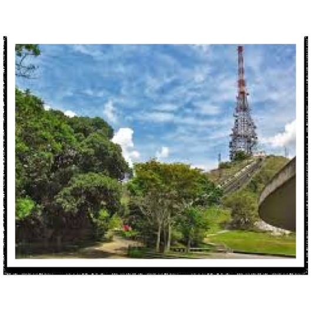

Um bairro incrível!
Venha conhecer
O bairro Jaraguá surgiu do desmembramento
da Fazenda Jaraguá. Em 1939, a fazendo
onde se encontra o morro jaraguá
é
adquirida pelo Governo do estado.
Pico do Jaraguá
A maior atração do bairro
Diversão para você sua família, Thilhas,
incríveis, quióques e muito mais

Curiosidades

Poor que do nome?
Jaraguá, na língua Tupi significa Gruta do Senhor, Guarda do Vale ou Senhor dos Vales.
Ponto mais alto de SP!
O Pico do Jaraguá é o ponto mais alto de São Paulo. Com seus 1135 metros de altitude, chama a atenção de inúmeros visitantes por ano em busca de uma vista privilegiada da maior cidade da América Latina.
Mais altigo que o Everest!
Mais antigo que a cordilheira dos Andes e que a cordilheira do Himalaia, o Pico do Jaraguá foi modelado na paisagem há cerca de algo entre 700 milhões e 500 milhões de anos, durante a formação do supercontinente Gondwana.
Conhecendo o Jaraguá!
Quer saber mais
sobre o Bairro?
cadastre-se e fique por dentro
das novidades